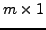
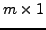
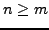
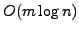
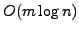

In many signal processing applications, the non-negative least squares problem (NNLS) of ``moderate'' size (in a few hundred to a thousand variables) arises. Efficient solutions of these problems would enable online applications, in which the estimation can be performed as data is acquired. We parallelize a version of the active-set iterative algorithm derived from the original algorithm of Lawson and Hanson (1974) on a graphics processor. This algorithm requires the solution of an unconstrained least squares problem in every step of the iteration for a matrix composed of the ``passive columns'' of the original system matrix. To achieve improved performance we use parallelizable procedures to efficiently update and ``downdate'' the QR factorization of the matrix at the current iteration to account for inserted and removed columns, and efficient data structures that account for GPU memory access patterns.
The NNLS problem has roots in data-modelling where we optimize a set of
underlying parameters that is used to describe observed data. The
underlying parameters denote a set  variables in a
 vector
. The observed data is composed of
variables in a
 vector
. The observed data is composed of  observations in a
vector
.
Suppose that the observed data are linear functions of the underlying
parameters in the model, then the linear functions may be expressed as a
matrix
observations in a
vector
.
Suppose that the observed data are linear functions of the underlying
parameters in the model, then the linear functions may be expressed as a
matrix  where
where  describes a linear mapping from the
parameters in
describes a linear mapping from the
parameters in  to the observations in
to the observations in  .
.
In the general case where , the dense overdetermined system of
linear equations may be solved via a least squares approach by
decomposing matrix where  is an orthogonal
matrix
and
is an orthogonal
matrix
and  is an upper-triangular
matrix. The resulting matrix
equation may be rearranged as and solved via back-substitution.
is an upper-triangular
matrix. The resulting matrix
equation may be rearranged as and solved via back-substitution.
Sometimes, the underlying parameters are constrained to be non-negative in order to reflect real-world prior information. When the data is corrupted by noise, the estimated parameters may not satisfy these constraints, producing answers which are not usable. In these cases, it is necessary to explicitly enforce the non-negativity constraints and so we solve for
The seminal work of Lawson and Hanson in ref. [3] provided the first widely used method for solving this NNLS problem. This algorithm, later referred to as the active-set method, partitions the set of parameters or variables into the active and passive-sets. The active-set contains the variables with value zero and those that violate the constraints in the problem. The passive-set contains the variables that do not violate the constraint. By iteratively updating a feasibility vector with components from the passive-set, each iteration is reduced to an unconstrained linear least squares sub-problem that is solvable via .
We denote the unconstrained sub-problem as the linear system
where matrix contains the column vectors in matrix  that
correspond to variables in the passive-set. Observe that any changes
between the active and passive-sets at each iteration are generally
limited to the exchange of a single variable; usually one column vector
is added or removed from at each iteration. We make an important
distinction that exchanged variables that have remained in the same set
throughout several iterations have a lower propensity for future
exchanges. This leads to an efficient algorithm that does not recompute
the entire decomposition at each step but rather modifies
previous
that
correspond to variables in the passive-set. Observe that any changes
between the active and passive-sets at each iteration are generally
limited to the exchange of a single variable; usually one column vector
is added or removed from at each iteration. We make an important
distinction that exchanged variables that have remained in the same set
throughout several iterations have a lower propensity for future
exchanges. This leads to an efficient algorithm that does not recompute
the entire decomposition at each step but rather modifies
previous  and
and  matrices with regards to two cases:
matrices with regards to two cases:
Our update procedure is based on the modified Gram-Schmidt algorithm for
orthogonalizing the inserted column with respect to all the existing
columns in  . The time-complexity of the update step is . The
parallel time-complexity is
. The downdate procedure
involves a series of Given's rotations that introduces zeros to a single
row of
. The time-complexity of the update step is . The
parallel time-complexity is
. The downdate procedure
involves a series of Given's rotations that introduces zeros to a single
row of  . The time-complexity of the downdate step is . The
parallel time-complexity is .
. The time-complexity of the downdate step is . The
parallel time-complexity is .
We implement our algorithm on NVIDIA's Compute Unified Device Architecture. For a comparison, Matlab's built-in lsqnonneg routine implements a version of the Lawson and Hanson active-sets algorithm that solves the sub-problem via a full decomposition based on Intel's optimized Math Kernel Library code-base. Other active-set variants in literature include the Fast NNLS (FNNLS) algorithm in ref. [1] and the Projective Quasi-Newton NNLS (PQN-NNLS) algorithm in ref. [2]. For experiments results, we apply the listed algorithms to a deconvolution problem with data obtained from terrain laser imaging. We show that our algorithm achieves a moderate speed-up over the lsqnonneg routine and a substantial speed-up over the FNNLS and PQN-NNLS algorithms for our data-set.
References